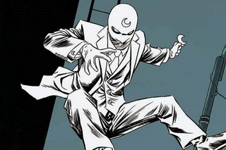
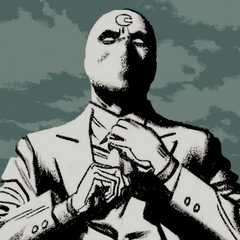

Sobre
Quem é o Cavaleiro da Lua?
O Cavaleiro da Lua, também conhecido como Marc Spector, é um dos personagens mais enigmáticos e complexos do Universo Marvel. Com sua origem envolta em mistério e sua conexão mística com a lua, ele tem cativado os fãs de quadrinhos e entusiastas do universo sobrenatural por décadas. Marc Spector, um ex-mercenário atormentado por um passado traumático, encontra-se envolvido em uma batalha perpétua entre a luz e a escuridão, tanto dentro de si mesmo quanto no mundo ao seu redor.
Poderes e Habilidades Sobrenaturais
Dotado de força sobre-humana, habilidades de combate excepcionais e uma intuição aguçada, o Cavaleiro da Lua é um formidável oponente para qualquer vilão que ouse cruzar seu caminho. Sua conexão mística com as fases da lua confere-lhe poderes adicionais durante os períodos de lua cheia, dando-lhe uma vantagem estratégica inigualável. O Cavaleiro da Lua também é conhecido por sua perícia em artes marciais, sendo um mestre em diversas modalidades de combate corpo a corpo. Sua capacidade de se adaptar rapidamente a novas situações o torna imprevisível e altamente eficaz em enfrentar inimigos de todos os tipos. Sua armadura, equipada com tecnologia de ponta e recursos de combate avançados, contribui para aumentar ainda mais sua formidável presença no campo de batalha.
Luta Interna e Dualidade
Além de suas habilidades físicas extraordinárias, o Cavaleiro da Lua enfrenta uma luta interna constante. Sua batalha contra transtornos mentais e múltiplas personalidades cria uma dualidade única que o distingue de outros super-heróis. Com uma história complexa e emocionante, ele é um símbolo de resiliência e superação, proporcionando aos leitores uma visão perspicaz sobre a natureza humana e as complexidades da identidade.